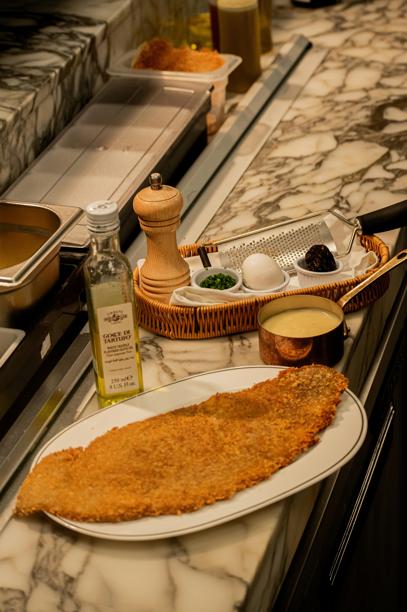
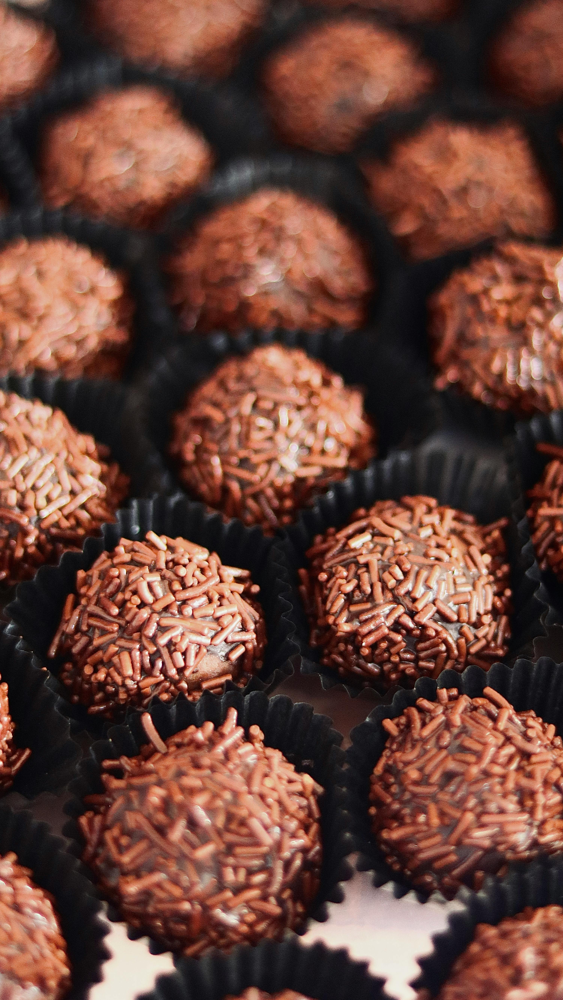

Prato de entrada bem comum em restaurantes e bares.

Photo by: Vitaliy Haiduk from pexels
Ótima e saborosa opção de proteína para acompanhar no almoço ou jantar.
Photo by: SAAD EMRIS from pexels
Doce bem comum no Brasil, muito vendido na rua em sua versão “gourmet”.
Photo by: Meggy Kadam Aryanto from pexels